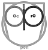

OpenProdoc
 OpenProdoc: Document Management System Castellano 
Some OpenProdoc Internet references:
Document Management / Archives:- Universo Abierto
- Pinakes
- Profesionales de Ciencias de la Información
- DocuWeb
- Dokumentalistas
- Anabad
- ACAL: Asociación Archiveros Castilla y León
- COBDC: Alternativas Libres a Sharepoint
- Planeta Biblioteca
- Marketing & Management
- In deep analysis of project code
- I Love Free Software Review
- Portal Programas
- Barrapunto
- lists.w3.org
- Alternatives to OpenProdoc
- Meneame.net
- OpenProdoc in Softpedia
- OpenProdoc Mac in Softpedia
- Find best Software
- Software Selección
- 3 Alternatives to OpenProdoc
- Free To Download
- FreeSMUG:Free Open Source Software Mac User Group
- win7dwnld
- OpenSource.com